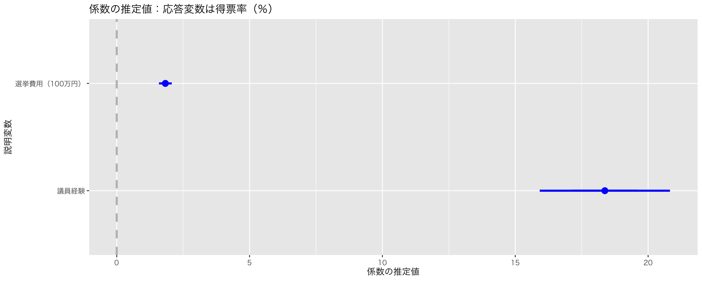
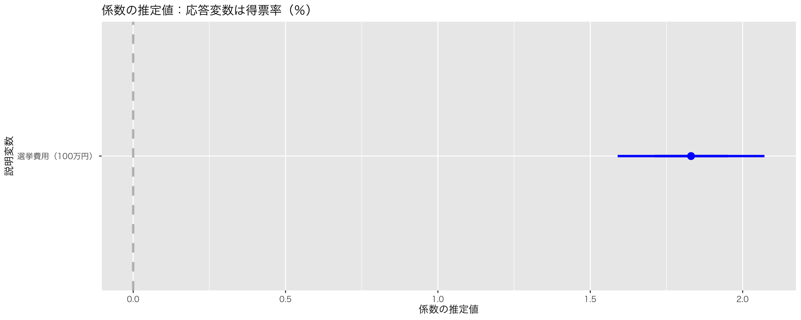
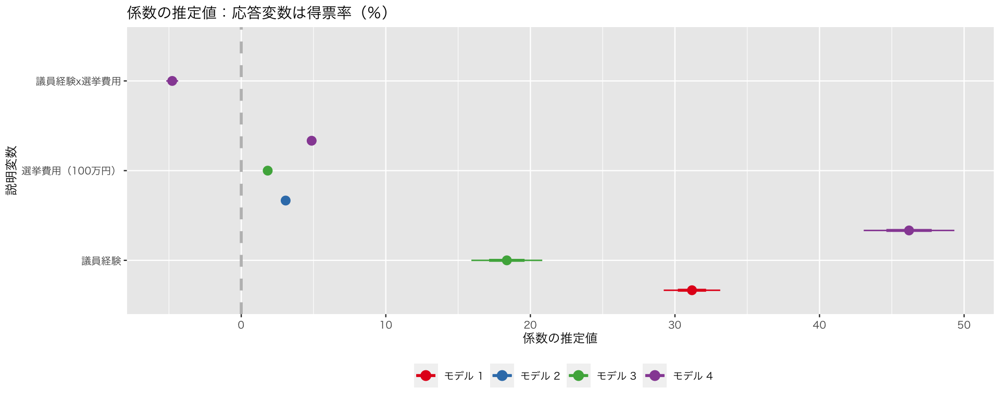

pacman::p_load(tidyverse,
broom,
coefplot,
texreg)
if (.Platform$OS.type == "windows") {
if (require(fontregisterer)) {
my_font <- "Yu Gothic"
} else {
my_font <- "Japan1"
}
} else if (capabilities("aqua")) {
my_font <- "HiraginoSans-W3"
} else {
my_font <- "IPAexGothic"
}
theme_set(theme_gray(base_size = 9,
base_family = my_font))9 分析結果の提示法
今回の目標
- 分析結果を報告する方法を身につける
9.1 準備
必要なパッケージを読み込む。
説明のために『Rによる計量政治学』（浅野正彦, 矢内勇生. 2018）で使用されているデータ（hr-data.csv）を使う。
HR <- read_csv("data/hr-data.csv")
#glimpse(HR)衆議院議員経験があることを表すダミー変数と選挙費用を100万円単位で測定する変数を作る。
HR <- HR |>
mutate(experience = as.numeric(status == "現職" | status == "元職"))2009年の結果だけ抜き出し、HR09として保存する（expm が欠測しているものを除外する）。
4つの回帰モデルを推定しておく。
9.2 分析結果の提示
9.2.1 式を書く
説明変数の数がそれほど多くない場合は、式で結果を示しても良い。
例えば、fit_1 の推定結果は、次の式にまとめられる。 \[
\begin{aligned}
\widehat{得票率} = &13.91 & + & 31.18 & \cdot 議員経験\\
&(0.62) & & (0.98) &
\end{aligned}
\] ただし、カッコ内は標準誤差である。
この式は、次のコードで書いた。
$$
\begin{aligned}
\widehat{得票率}
= & 13.91
& + & 31.18 & 議員経験 \\
& (0.62)
& & (0.98) &
\end{aligned}
$$このように、Quarto文書では$$で囲んだブロックに \(\TeX\) 形式の数式を書くことができる（注意：Quarto [あるいは R Markdown] 以外で\(\LaTeX\) の数式を書く際は、日本語を \mathrm{} または \mbox{} に入れる必要がある）。また、数式の中に推定値を利用する場合、数値を打ち込む代わりにRで計算した結果を利用することができる。上の例では、傾きである\(31.18\) をタイプする代わりに、round(coef(fit_1)[2], 2) というRコードを使っている。数式ブロックを独立させずに、文章中に数式を入れる場合は、$ で囲む（$ の数が異なるだけ）。
これに加え、サンプルサイズと決定係数（重回帰なら自由度調整済み決定係数）を表示する必要がある。サンプルサイズは、 length(fit_1$residuals) で、決定係数は summary(fit1)$r.squared （自由度調整済み決定係数は adj.r.squared）で表示することができるので、その値を記載する。
さらに、信頼区間も表示することが望ましい。97%信頼区間は、次のように求めることができる。
confint(fit_1, level = 0.97) 1.5 % 98.5 %
(Intercept) 12.55696 15.25858
experience 29.05440 33.30061よって、議員経験の回帰係数の97%信頼区間は [29.05,33.3] である。
\(\TeX\) 形式の数式の書き方については、以下のページ・サイトが参考になる。
9.2.2 表を作る
回帰分析の結果を表にするには、texregパッケージ を使う（他にもさまざまなパッケージがある）。 どこに表示するかによって、使う関数が異なる。
- RStudio 内（またはR のコンソール）で表示：
texreg::screenreg() - HTML に render する：
texreg::htmlreg() - (LaTeXを使って) PDFに render する：
texreg::texreg()
基本的な使い方は、
screenreg(fit_1,
stars = NULL,
caption = "得票率を応答変数とする単回帰の推定結果",
caption.above = TRUE)
=====================
Model 1
---------------------
(Intercept) 13.91
(0.62)
experience 31.18
(0.98)
---------------------
R^2 0.48
Adj. R^2 0.48
Num. obs. 1124
=====================である。stars = NULL は必ず指定するようにしよう！
この資料のように、HTML にknit するときは、次のようにする。ただし、チャンクオプションで results: 'asis' を指定する。つまり、コードチャンクの冒頭が、
のようになる。
htmlreg(fit_1,
stars = NULL,
caption = "得票率を応答変数とする単回帰の推定結果",
caption.above = TRUE)| Model 1 | |
|---|---|
| (Intercept) | 13.91 |
| (0.62) | |
| experience | 31.18 |
| (0.98) | |
| R2 | 0.48 |
| Adj. R2 | 0.48 |
| Num. obs. | 1124 |
PDF にrenderする場合は、次のようにする（この資料はPDFではないので、結果は省略する）。results = 'asis' は必要。
texreg(fit_1,
stars = NULL,
caption = "得票率を応答変数とする単回帰の推定結果",
caption.above = TRUE)複数のモデルで回帰分析を実行した場合、結果を1つの表にまとめることもできる。また、日本語で論文・レポートを書くなら、表の中身も日本語にすべきである。
models <- list(fit_1, fit_2, fit_3, fit_4)
htmlreg(models,
stars = NULL,
caption = "得票率を応答変数とする回帰モデルの推定結果",
caption.above = TRUE,
custom.model.names = paste("モデル", 1:4),
custom.coef.name = c("切片",
"議員経験",
"選挙費用 (100万円）",
"議員経験 x 選挙費用"),
custom.gof.names = c("R<sup>2</sup>",
"自由度調整済みR<sup>2</sup>",
"観測数"),
custom.note = "注：括弧内は標準誤差。")| モデル 1 | モデル 2 | モデル 3 | モデル 4 | |
|---|---|---|---|---|
| 切片 | 13.91 | 7.74 | 7.89 | -2.10 |
| (0.62) | (0.76) | (0.69) | (0.71) | |
| 議員経験 | 31.18 | 18.37 | 46.19 | |
| (0.98) | (1.23) | (1.57) | ||
| 選挙費用 (100万円） | 3.07 | 1.83 | 4.87 | |
| (0.10) | (0.12) | (0.16) | ||
| 議員経験 x 選挙費用 | -4.77 | |||
| (0.21) | ||||
| R2 | 0.48 | 0.48 | 0.57 | 0.71 |
| 自由度調整済みR2 | 0.48 | 0.48 | 0.56 | 0.71 |
| 観測数 | 1124 | 1124 | 1124 | 1124 |
| 注：括弧内は標準誤差。 | ||||
ただし、texreg()を使ってPDF にrender するときは、"R<sup>2</sup>" の代わりに "$R^2$ とする。
9.2.3 図を作る
キャタピラプロットと（飛行機図とも）呼ばれる図を使って、回帰分析の結果図示しよう。Jared Lander が作ったcoefplot パッケージを使うのが便利である。
上で推定した4つのモデルについて、キャタピラプロットを作ってみよう。
1つのモデルを図示するときは、coefplot::coefplot() を使う。チャンクオプションに fig.cap = "ここに図のキャプションを書く" を加えると図にキャプションをつけることができる。例えば、コードチャンクの冒頭に{r, fig.width = 5, fig.height = 3, fig.cap = "モデル3の推定結果"} とする。
plt_fit3 <- coefplot(
fit_3,
lwdOuter = 1, # 95%信頼区間を表示する線分の太さ
intercept = FALSE, # 切片は興味の対象ではないので非表示
title = "係数の推定値：応答変数は得票率（％）",
xlab = "係数の推定値",
ylab = "説明変数",
newNames = c(experience = "議員経験", expm = "選挙費用（100万円）"))
plot(plt_fit3)
これで図ができる。（しかし、このモデルの場合、回帰係数の大きさがばらばらなので、1つの図に収めようとすると信頼区間がよくわからなくなってしまうという問題がある。）
ここで、興味があるのは選挙費用が得票率に与える影響のみであり、議員経験は交絡としてコントロールしたものであると仮定しよう。そうすると、結果として表示すべきは、選挙費用の係数と信頼区間のみである。言い換えると、議員経験の推定結果は表示したくない。次のようにする。
plt_fit3b <- coefplot(
fit_3,
lwdOuter = 1,
coefficients = c("expm"), # この行を加える
intercept = FALSE,
title = "係数の推定値：応答変数は得票率（％）",
xlab = "係数の推定値",
ylab = "説明変数",
newNames = c(expm = "選挙費用（100万円）"))
plot(plt_fit3b)
複数のモデルを1つの図に示すときは、coefplot::multiplot() を使う。
plt_multi <- multiplot(
fit_1, fit_2, fit_3, fit_4,
intercept = FALSE,
numberAngle = 0,
title = "係数の推定値：応答変数は得票率（％）",
xlab = "係数の推定値",
ylab = "説明変数",
newNames = c(experience = "議員経験", expm = "選挙費用（100万円）",
"experience:expm" = "議員経験x選挙費用")) +
scale_color_brewer(palette = "Set1",
name = "",
labels = paste("モデル", 1:4))Scale for colour is already present.
Adding another scale for colour, which will replace the existing scale.print(plt_multi)
モデルごとに推定値の値が大きく異なるので、この図はあまりよくない。変数変換などを利用して、推定値の見かけ上の値がだいたい同じ範囲に収まるようにすることが望ましい。
これ（この程度の調整）で満足いく図ができるときは、ここで説明したようにcoefplot::coefplot()や coefplot::multiplot() を使うのが楽だ。さらなる微調整をしたいならggplot2::geom_pointrange() などを使って自力で作図することもできる。
レポートや論文に載せる図表には必ず通し番号（図と表の番号は別々）とキャプションを付ける必要がある。これについては「統計学2」で学習済み なので、復習しておこう。